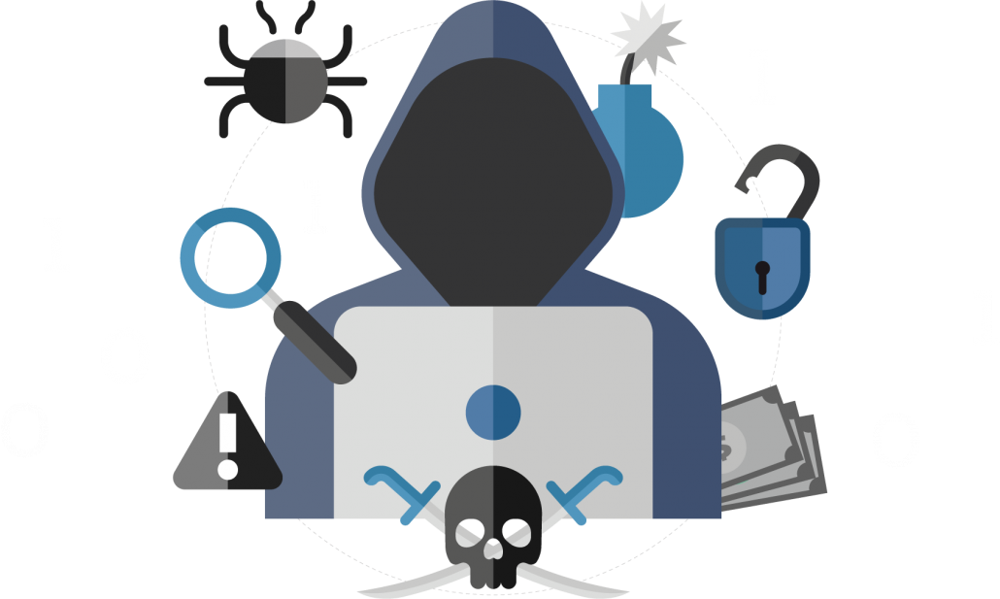
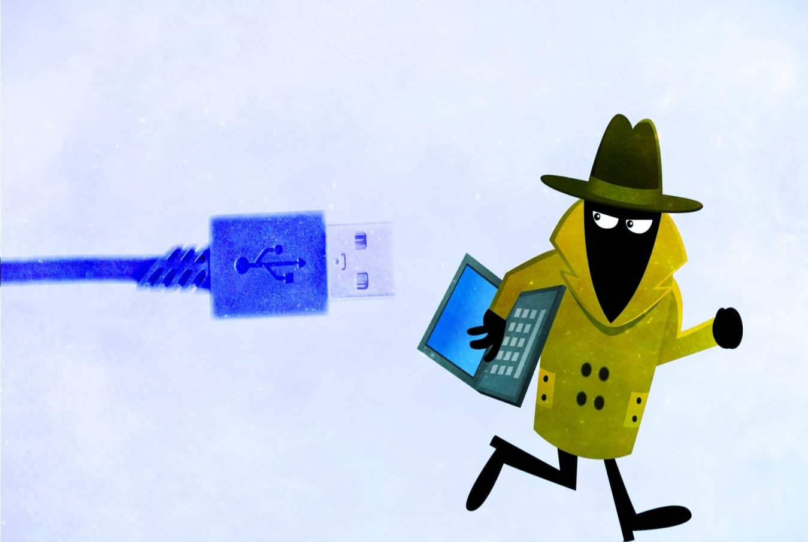

Celem tego modułu jest zapoznanie uczestników z podstawowymi zagrożeniami, które występują w internecie, oraz przedstawienie metod i narzędzi, które pomogą im unikać tych zagrożeń.

Bezpieczeństwo w sieci stało się kluczowym zagadnieniem w codziennym życiu, zarówno w pracy, jak i podczas korzystania z mediów społecznościowych, bankowości internetowej czy zakupów online.
Wraz z rosnącym znaczeniem internetu w życiu codziennym, wzrasta liczba zagrożeń związanych z cyberprzestępczością i atakami na dane osobowe. Każdy użytkownik sieci, niezależnie od tego, czy jest profesjonalistą, czy osobą prywatną, jest narażony na różnorodne ryzyka. Ochrona prywatności i danych osobowych, unikanie oszustw i zabezpieczenie urządzeń są kluczowe dla zapewnienia bezpieczeństwa w internecie.
1. Kradzież danych osobowych
Kradzież danych osobowych to jedno z najpoważniejszych zagrożeń, które może wystąpić w internecie. Oszuści mogą próbować zdobyć Twoje dane (np. imię, nazwisko, adres, numer PESEL, dane kart kredytowych) w celu dokonania kradzieży tożsamości, przejęcia kont bankowych czy realizacji oszustw finansowych.

Jakie metody stosują cyberprzestępcy?
Phishing – oszustwo polegające na podszywaniu się pod zaufane instytucje (np. banki, sklepy internetowe) w celu wyłudzenia danych logowania.
Kradzież przez złośliwe oprogramowanie – trojany, keyloggery, wirusy, które rejestrują wprowadzone dane, np. hasła.
Publiczne Wi-Fi – przechwytywanie danych przesyłanych przez niezabezpieczoną sieć.
Jak się chronić?
Stosowanie silnych, unikalnych haseł
Korzystanie z dwustopniowej autoryzacji (2FA)
Uważność na podejrzane e-maile i strony internetowe
2. Cyberprzestępczość i oszustwa internetowe
Cyberprzestępcy wykorzystują technologię do popełniania przestępstw, takich jak kradzież tożsamości, wyłudzanie pieniędzy, a także ataki na firmy i instytucje.
Przykłady cyberprzestępczości:
Phishing – fałszywe e-maile, SMS-y lub strony internetowe, które mają na celu wyłudzenie danych logowania, numerów kart kredytowych itp.
Ransomware (oprogramowanie typu „ransomware”) – złośliwe oprogramowanie, które blokuje dostęp do danych użytkownika i żąda okupu za ich odzyskanie.
Skradzione karty kredytowe – dane kart kredytowych są kradzione z internetu i wykorzystywane do nieautoryzowanych transakcji.
Jak się chronić?
Regularne aktualizowanie oprogramowania (system operacyjny, aplikacje)
Korzystanie z zabezpieczeń takich jak firewalle, programy antywirusowe
Uważność przy klikanie w linki lub otwieranie załączników w e-mailach
3. Ryzyko złośliwego oprogramowania i ataków hakerskich
Złośliwe oprogramowanie (malware) to programy, które mogą uszkodzić systemy komputerowe, przejąć kontrolę nad urządzeniem, a także zbierać dane użytkowników. Wśród najbardziej powszechnych rodzajów złośliwego oprogramowania wyróżnia się wirusy, trojany, robaki, adware, spyware, a także ransomware.
Jakie zagrożenia stwarza malware?
Wirusy i robaki – mogą uszkodzić system operacyjny, usunąć pliki lub zainstalować inne złośliwe oprogramowanie.
Trojan – ukrywa się w pozornie bezpiecznych plikach lub programach, przejmując kontrolę nad systemem.
Ransomware – blokuje dostęp do danych użytkownika, domagając się okupu za ich odzyskanie.
Jak się chronić?
Instalowanie oprogramowania antywirusowego i zapór ogniowych
Regularne aktualizowanie systemu i aplikacji
Unikanie pobierania plików z nieznanych źródeł
Bezpieczeństwo online to kluczowy aspekt korzystania z internetu, który staje się nieodzowną częścią naszego codziennego życia. W świecie, gdzie niemal każda interakcja może odbywać się cyfrowo, zrozumienie zagrożeń i ochrona danych osobowych to podstawa bezpiecznego funkcjonowania w sieci.
W tym module omówiliśmy podstawowe zagrożenia, takie jak:
Kradzież danych osobowych: cyberprzestępcy mogą wykorzystać Twoje dane do podszywania się pod Ciebie, dokonywania oszustw finansowych czy nawet kradzieży tożsamości.
Cyberprzestępczość: obejmuje różne formy działań, od ataków phishingowych i włamań na konta, po wyłudzanie danych i oszustwa internetowe.
Ryzyko związane z złośliwym oprogramowaniem: wirusy, trojany, ransomware i spyware mogą uszkodzić Twoje urządzenia, kraść dane lub uniemożliwić dostęp do systemów.
Zrozumienie tych zagrożeń jest fundamentem do dalszego nauczania o metodach ochrony przed nimi. Kluczowe praktyki w zakresie bezpieczeństwa online obejmują:
Korzystanie z silnych haseł i ich regularne zmienianie – hasła powinny być unikalne dla każdego konta, długie i skomplikowane.
Wdrażanie wieloskładnikowego uwierzytelniania (2FA) – dodanie kolejnego poziomu zabezpieczeń zwiększa odporność na włamania.
Ostrożność podczas otwierania linków i załączników w e-mailach – unikanie klikania w podejrzane odnośniki i sprawdzanie nadawcy wiadomości może zapobiec atakom phishingowym.
Regularne aktualizacje oprogramowania – aktualizacje często zawierają poprawki bezpieczeństwa, które chronią przed nowymi zagrożeniami.
Używanie programów antywirusowych i zapory sieciowej – dodatkowe narzędzia ochrony mogą pomóc w wykrywaniu i eliminowaniu zagrożeń.